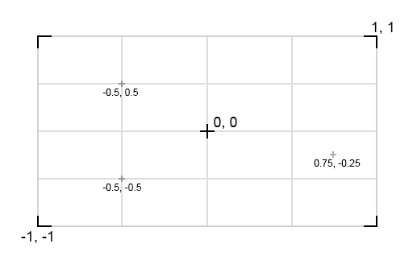
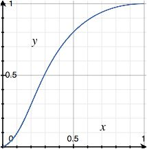
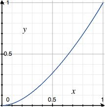
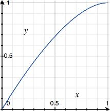
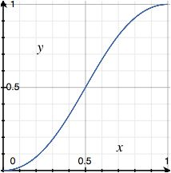
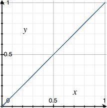

The KineMaster Effect Description Language is an XML-based language used to describe effects, transitions and themes for KineMaster. The parser is quite strict, so please pay close attention to syntax. Some important points:
KineMaster supports plug-in clip effects, transition effects and themes. In development versions of KineMaster, these can be installed by copying them into the appropriate folder on the device.
Themes are self-contained. Theme files have the extension .kmt, and are installed by copying the .kmt file into the Themes folder.
For clip effects and transition effects, you must put the .nfxs file and all of the required .png and .jpeg files into the appropriate folder (either Effects or Transitions).
Although KineMaster checks for updated themes and effects while running, there may be issues with updating themes while they are in use. It is therefore best to terminate and re-start KineMaster after installing new themes or effects directly. (This applies to development versions only; release versions that support downloadable themes will be able to install the new themes live).
There are three types of plugins that are supported by KineMaster:
Each of these is defined in a .nfxs file (basically, an XML file that uses only KEDL tags and attributes as specified in this document). Clip effects and transition effects must have a single <Effect /> root element. Themes have a single <Theme /> root element which contains several <Effect /> elements within it.
A full plugin consists of the .nfxs file as well as all other required files referenced by the .nfxs file, such as .png, .jpeg, .ttf, .aac files and so on. In the case of a Theme plugin, these are all packaged in a .kmt file (see KMT Packages for details)
Within a plugin's <Effect /> element, the general approach is to define textures and animated values first, and then to use drawing elements such as triangle strips and rectangles to render the effect.
<texture id="video_out" video="1" />
<texture id="video_in" video="2" />
<animatedvalue id="fade">
<keyframe value="0" />
<keyframe value="1" />
</animatedvalue>
<rect bounds="-1 1 1 -1" texture="@video_out" />
<style alpha="@fade">
<rect bounds="-1 1 1 -1" texture="@video_in" />
</style>
Each element can have an id assigned using the id attribute.
Elements can be referred to elsewhere by prefixing their id with the @ symbol. This is primarily used to use the output of an <animatedvalue> someplace where a scalar or vector would normally be given directly. This is also used to refer to defined textures.
There are some rules relating to id uniqueness:
This means that it is possible to use an id for a texture in an effect, and define another texture with the same id at the theme level. In this case, the closest definition to a reference takes priority. In other words, this can be used to define a set of default textures available to the whole theme, but override them for specific individual themes.
For themes and effects, to maintain a globally unique ID, we recommend using your organization's internet domain name in reverse order (similar to a java package name), with underscores replacing period. For example, if your company's domain name is example.com and you have a theme named "Summer", then you might choose a theme ID such as: com_example_theme_summer
IMPORTANT: KineMaster predefines the following two textures automatically (but explicitly defined elements with the same id take precedence, so you can override these):
<texture id="video_out" video="1" /> <texture id="video_in" video="2" />
The default coordinate system is the OpenGL coordinate system. This places 0,0 in the center of the screen. The lower-left corner is at -1,-1 and the upper-right corner is at 1,1. Obviously, this means that figures with equal width and height (for example, a rectangle drawn fromn -0.5,-0.5 to 0.5,0.5) will be distorted.
In most cases, it is useful to begin with a 720p coordinate system. That is, each unit is equal to one pixel at 720p and the aspect ratio is adjusted so that pixels are square. It is also usually desirable to set up a 3D projection, so that changes to the Z coordinate will be reflected by a point appearing closer or further from the observer.
The following code sets up a 720x1280 (720p) coordinate system with a 3D perspective transform and a 45-degree field of view. IT IS HIGHLY RECOMMENDED to use this in all effects, even effects that don't use 3D, because it maintains the correct aspect ratio when performing other transformations such as rotation:
<projection type="perspective" aspect="1.777777" fov="45" near="0.01" far="60000">
<translate offset="-640 -360 -870">
<!-- Anything drawn here uses the transformed coordiantes -->
</translate>
</projection>
This code creates a perspective projection, then transforms the coordinate away from the camera (without doing that, objects on the z=0 plane are too close to be seen).
The result is a coordinate system with 0,0 in the bottom-left corner, and integer coordinates on the z=0 plane being equal to one pixel on a 720p display. The aspect ratio is at 16:9, so pixels are square for 720p output.
There are several different formats that can be used for attribute values
(enum) These values are one of a fixed set of strings. The possible values are listed in this document in the section describing each element. The value must be entered exactly as it is shown, with no spaces. The exception is that enum values are not case sensitive.
(constant vector) Vectors are lists of floating point numbers. Each element in the list is separated by a comma or space (which one you use is entirely up to you). Multiple spaces together are treated as a single space. Vectors are used to define locations in 2D and 3D space, as well as colors and animation timing functions. Constant vectors can be defined using literal components only. In some cases, a reference to a <Const /> element may be allowed as well.
(animated vector) An animated vector is the same as a constant vector, except that in addition to supporting literal vector components, components may be supplied by reference to <AnimatedValue />, <Const /> or <Sequence /> elements. It is possible to mix references and literal values as components of the same vector. A reference to another element is made by prefixing the element's ID with the @ symbol.
<AnimatedValue id="fade_in">
<KeyFrame value="0" />
<KeyFrame value="1" />
</AnimatedValue>
<Style alpha="@fade_in">
<Rect bounds="0 0 1 1" color="1 0 0" />
</Style>
If a reference is to a vector with multiple components, all components are used.
<AnimatedValue id="box_center">
<KeyFrame value="-0.5 0.5" />
<KeyFrame value="0.5 1.0" />
</AnimatedValue>
<Translate offset="@box_center">
<Rect bounds="-0.1 -0.1 0.1 0.1" color="1 0 0" />
</Translate>
If the vector is shorter than required, remaining components can be filled in using literals:
<AnimatedValue id="red_level">
<KeyFrame value="1" />
<KeyFrame value="0" />
</AnimatedValue>
<Rect bounds="-0.1 -0.1 0.1 0.1" color="@red_level 0 0.5" />
Individual components may be referenced directly by index, using the syntax @element_id[index]. Index values are zero-based. In addition, components may be referenced by name using the syntax @element_id.name. Names are just aliases for certain index values. There is no functional difference, but they may make code more readable:
.x = .r = .s = [0] .y = .g = .t = [1] .z = .b = .p = [2] .w = .a = .q = [3]
For example, to swap the red and green values given by an animated value:
<AnimatedValue id="box_color">
<KeyFrame value="1.0 0.0 0.0" />
<KeyFrame value="0.5 1.0 1.0" />
</AnimatedValue>
<Rect bounds="-0.5 -0.5 0.5 0.5" color="@box_color.g @box_color.r @box_color.b" />
Or to use only the green element, with fixed values for the other elements:
<AnimatedValue id="box_color">
<KeyFrame value="1.0 0.0 0.0" />
<KeyFrame value="0.5 1.0 1.0" />
</AnimatedValue>
<Rect bounds="-0.5 -0.5 0.5 0.5" color="0.5 @box_color.g 1.0" />
Finally, referenced elements may be scaled by a constant factor using the * and / operators (be sure not to leave a space around the operator; spaces delimit new values).
<AnimatedValue id="box_color">
<KeyFrame value="1.0 0.0 0.0" />
<KeyFrame value="0.5 1.0 1.0" />
</AnimatedValue>
<Rect bounds="-0.5 -0.5 0.5 0.5" color="0.5 @box_color.g*0.5 1.0" />
(float)
(integer)
(string)
(flags)
(mixed)
These attributes apply to all tags.
id Establishes an identifier for the element. This can be used later to refer back to the element. Identifiers must follow the following rules:
Permitted Parents: <Effect />
An animated value establishes a vector of floating-point values that change over time as the effect progresses. Animated values can be referred to by their ID in other elements. See the reference for each individual element to see which parameters support animation.
For example, the following code causes a red square to appear and fade in gradually over the course of the effect:
<AnimatedValue id="fade_in">
<KeyFrame value="0" />
<KeyFrame value="1" />
</AnimatedValue>
<Style alpha="@fade_in">
<Rect bounds="0 0 1 1" color="1 0 0" />
</Style>
An animated value element should contain <Keyframe /> elements that define points between which the values are interpolated. If the keyframe values are different depending on the position of the clip or the current part (of a title effect, for instance) keyframes can be placed inside of a <Part /> element. If there are keyframes outside of any <Part />, they will be used only if no matching part element is found.
timingfunction Controls the speed at which the animation timing progresses. Animation timing is calculated using a cubic bezier function (a curve) to prevent the feeling of a "jerk" that happens at the beginning and end of an animation when using merely linear interpolation.
By adjusting the parameters of the bezier function, the smoothness of the curve can be adjusted. This can be a vector with four elements, a reference to a <TimingFunction /> or <Const /> node, or one of the following preset values.
ease Begins the animation gradually and finishes the animation gradually. Same as specifying 0.25 0.10 0.25 1.00
ease-in Begins the animation gradually and finishes linearly. Same as specifying 0.42 0.00 1.00 1.00
ease-out Begins the animation linearly and finishes gradually. Same as specifying 0.00 0.00 0.58 1.00
ease-in-out Begins the animation gradually and finishes the animation gradually. Same as specifying 0.42 0.00 0.58 1.00
linear Linear timing function. Same as specifying 0.00 0.00 1.00 1.00
default The default timing function, if none was specified. Same as ease
scope Sets the some (time scale) for calculating this value.
part (default) Time advances from 0 to 1 for each part of the effect.
whole Time advances from 0 to 1 over the course of the whole effect, without regard to parts.
basis
time (default) The value changes with respect to time (see scope for setting the time scale)
clipindex The value is fixed with respect to time (not really animated), but a value is chosen based on the index of the current clip with respect to the project. This allows for slightly different positioning each time the effect is used.
clipindexshuffle Same as clipindex, but the value is chosen randomly based on the clip index.
noise
none (default)
perlin-simplex
noisefunction
pure (default)
fractal noise(p) + ½ noise(2p) + ¼ noise(4p) ...
turbulence |noise(p)| + ½ |noise(2p)| + ¼ |noise(4p)| ...
wavefractal sin( x + |noise(p)| + ½ |noise(2p)| + ...)
noisebias (Float)
noisescale (Float)
noisesamplebias (Float)
noisesamplescale (Float)
noiseoctaves (Integer)
center (Vector)
radius (Float)
innerradius (Float) Optional; omit for filled circle.
color (Vector) Optional; omit to use color from enclosing style
innercolor (Vector) Optional; omit to use color
segments (Integer) Optional; omit to calculate automatically based on radius
Permitted Parents: <Effect /> <Part /> <Style /> <Translate /> <Rotate /> <Scale /> <Sequence /> <Visibility /> <Projection /> <Cull />
Clears the render buffer. By default, the color render buffer (which will be used as the output frame for the effect) is cleared.
color (vector or animated vector) Specifies the color to be used when clearing the color render buffer. The default (if this is not specified) is black. For example:
<clear color="0 0 0.5" /> <!-- clear render buffer to dark blue --> <clear /> <!-- clear render buffer to black -->
stencil If present, the stencil buffer will be cleared instead of the color render buffer. In this case, the color attribute is ignored. For example:
<clear stencil /> <!-- clear stencil buffer -->
Defines a constant scalar or vector value that can be referred to elsewhere by id.
For example, this code:
<const id="effectColor" value="1 0 0" /> <rect bounds="0 0 50 50" color="@effectColor" />
...is equivalent to this code...
<rect bounds="0 0 50 50" color="1 0 0" />
value (vector)
WARNING: This is an experimental element and should not be used.
width (float)
height (float)
origin (vector) x,y
yup (true/false)
applyto vertex/mask/texture (default=vertex)
Suppresses drawing primitives (triangles, rectangles, polygons, etc.) that are facing in a certain direction (useful for back-face culling when rendering in 3D). Primitives are assumed to defined with the points in clockwise order when seen from the front.
face
none (default) Don't perform any culling (all primitives are drawn)
back Cull primitives facing away from the viewer (where points are counter-clockwise as seen from the viewer's perspective)
front Cull primitives facing toward the viewer (where points are clockwise as seen from the viewer's perspective)
all Cull everything (no primitives are drawn)
<cull face="back">
<!-- primitives placed here will be culled accordingly -->
</cull>
The minimum required parameters for effect depend on the type of effect. For all effects, id is required and name and icon are strongly recommended.
Transition effects require type="transition" as well as effectoffset and videooverlap. It is recommended (but not required) to also specify defaultduration.
Title effects require type="title". Other settings are optional, but intime, outtime and repeat are commonly specified.
name (string)
icon resource filename, with extension (string)
type
transition
title
repeat
no
none
yes
repeat
sawtooth
sine
intime ms (integer)
outtime ms (integer)
intimefirst ms (integer)
outtimelast ms (integer)
cycleTime ms (integer)
minduration ms (integer)
maxduration ms (integer)
maxtitleduration ms (integer) Deprecated: Has no effect; do not use.
userduration true/false
defaultduration ms (integer)
effectoffset ms (integer)
videooverlap ms (integer)
Permitted Parents: <UserField /> <Option />
locale
value
type
simplexpure
simplexfractal
simplexturbulence
simplexwavefractal
inputbias float vector
inputscale float vector
outputbias float
outputputscale float
normalize yes/no
octaves integer
time (float)
value (float vector)
timingfunction This can be a vector with four elements, a reference to a <TimingFunction /> or <Const /> node, or one of the following preset values.
ease Begins the animation gradually and finishes the animation gradually. Same as specifying 0.25 0.10 0.25 1.00
ease-in Begins the animation gradually and finishes linearly. Same as specifying 0.42 0.00 1.00 1.00
ease-out Begins the animation linearly and finishes gradually. Same as specifying 0.00 0.00 0.58 1.00
ease-in-out Begins the animation gradually and finishes the animation gradually. Same as specifying 0.42 0.00 0.58 1.00
linear Linear timing function. Same as specifying 0.00 0.00 1.00 1.00
default The default timing function, if none was specified. Same as 0.25 0.10 0.25 1.00
Permitted Parents: <UserField />
label
value
type
in
out
mid
all
clip
first Only the first clip
mid All clips EXCEPT first and last
middle All clips EXCEPT first and last
last Only the last clip
even Only even-numbered clips (#2, #4, #6 ... )
odd Only odd-numbered clips (#1, #3, #5 ...)
all All clips
!first All clips EXCEPT the first
!mid All except the MIDDLE (first + last)
!middle All except the MIDDLE (first + last)
!last All clips EXCEPT the last
!even
!odd
location
texcoord
maskcoord
color
fill
color
points
type
ortho
perspective Sets up a 3D perspective projection.
Required attributes: fov, aspect, near, far
frustum
title-bottom
title-top
title-left
title-right
title-middle
left
right
top
bottom
near
far
fov
aspect
texture
mask
location
width
height
scalemode
stretch
fit
fill
anchor Combinations that make sense are permitted, such as "top right".
left
right
top
bottom
center
color
bounds
axis
angle
type
vertex
texture
mask
x
y
z
uniform
type
vertex
texture
mask
inverse
start
end
count
type
random
randmix
vrandom
vrandmix
linear (default)
exp
seed
It doesn't make sense to have dest and renderdest as attributes of <Style />. Functionally, they work well as style attributes, but that's not intuitive. I woule rather move them to a new <Output /> element that could later take additional parameters, such as what value to write to the stencil, etc.
Matthew 2012-07-19
This element controls a variety of aspects of child elements, such as alpha (opacity), brightness, contrast and so on. Multiple attributes can be combined. For example, the following boost the saturation on all child elements, and causes them to be 50% transparent:
<style alpha="0.5" saturation="0.75" >
<!-- elements here are effects by alpha and saturation adjustments -->
</style>
color (default: 0.5 0.5 0.5 1.0) Sets the default color for any primitives that don't explicitly specify a color or texture, including <trianglestrip>, <point>, <rect> and <polygon>
alpha (default: 1.0) This controls how opaque other elements are, and ranges from 0 (completely transparent) to 1 (fully opaque)
brightness (-1 ... +1)
antialias Enables antialiasing (via multisampling) on supported devices. This may have a performance impact, so use it only where necessary.
true
false (default)
depthtest Enables depth testing.
true
false (default)
depthmask Enables depth buffer writing.
true (default)
false
contrast (-1 ... +1)
saturation (-1 ... +1)
tint (float vector)
masksampling
normal (default)
invert
dest Controls where rendering output goes.
screen (default) Rendering output goes to the screen (the color render buffer)
stencil Rendering output goes to the stencil buffer
rendertest Controls the test condition used to determine whether a given pixel is drawn.
none (default) All pixels for all primitives are drawn.
stencil Pixels are only drawn if the corresponding pixel in the stencil buffer has been drawn.
stencilinvert Same as stencil but pixels are only drawn if the corresponding pixel in the stencil buffer has NOT been drawn.
animframe Specifies the frame number to show, for textures that have multiple frames available (that is, animated textures). A floating point value is accepted, but will be truncated to the nearest integer.
The standard approach is to use an <AnimatedValue /> for the frame number.
This is a zero-based frame index, so if the animation has 20 frames, valid frame numbers are 0 through 19. If this value is higher than the available number of frames in the texture, it will automatically loop around back to the first frame.
Defines a texture that can be used later when drawing trangles, rectangles and so on.
When defining a texture, it is important to assign an ID, because that ID will be used to refer to the texture later when using it for drawing operations.
There are currently three types of textures that are supported.
To specify a video texture, the video attribute is required. For title effects, specify 1 for the value of this attribute. For transition effects, 1 is the outgoing clip and 2 is the incoming clip:
<Texture id="video_out" video="1" /> <Texture id="video_in" video="2" />
To specify an image texture, the src attribute is required:
<Texture id="snowflake" src="snowflake.png" />
To specify an text texture, the text attribute is required, as well as either the stroke or fill attribute. Other attributes controlling the color of the text are commonly used as well:
<Texture id="title_text"
text="%1"
typeface="asset:knewave.ttf"
textsize="80"
fillcolor="#FFFFFF"
fill />
src
video
animated Takes three integer parameters:
<Texture id="wingflap" src="wingflap.png" animated="4 8 18" />Means that the frames are arranged in the texture in a 4-row x 8-column grid, and the first 18 cells are used (the rest are empty).
text
typeface
width
height
skewx
scalex
textsize
textstrokewidth
fillcolor
strokecolor
shadowcolor
bgcolor
textmargin
spacingmult
spacingadd
shadowoffset
shadowradius
nocache
bold
yes
no
italic
yes
no
fill
stroke
underline
strike
hinting
subpixel
shadow
linear
cutout When enabled, causes the text to be drawn in the DST_IN Porter-Duff mode. Essentially, this punches a hole through the background. This is useful if you want a filled background, but transparent text (you can see this in the Modern title effect included with KineMaster). If you use this feature, be sure to set a fillcolor to something with an alpha less than 1. Most commonly, this is used with fillcolor="#00000000" and an opaque bgcolor settings.
true
false
strokebehind Same as stroke, except that the outline is drawn before the fill (useful for typefaces with thin parts).
true (default)
false
autosize When enabled (true), for text effects, the texture size is automatically reduced to exactly wrap the text. This is useful if you are using <rect />> with the location parameter rather than the bounds parameter, but it requires a transformation where world coordinates have the same aspect ratio as pixel coordinates.
WARNING: If you are using the KineMaster Effect Designer tool, you MUST set this to false or the text will appear distorted.
true (default)
false
textalign
left
center
right
textvalign
top
center
bottom
wrap
none
mirror
repeat
wraps
none
mirror
repeat
wrapt
none
mirror
repeat
longtext
crop-end
wrap
ellipsize-start
ellipsize-middle
ellipsize-end
id
name
description
icon
music
hidden
This is for internal use, and should not appear in any theme or effect file.
name
defaultTheme
defaultTitle
defaultTransition
<TimingFunc /> could be removed; there's no reason we can't just use <Const /> for the same purpose (and in fact, it is already supported for that).
Matthew 2012-07-24
values
Permitted Parents: <Effect />
id
label
type
text
color
overlay
selection
default
offset
textureoffset
maskoffset
repeat
jitterseed
jitteralpha
jitter
This will be renamed to <Triangles>.
Matthew 2013-02-06
texture
mask
type
trianglestrip (default)
trianglefan
triangles
strip
fan
points
lines
linestrip
lineloop
check Value to check against start and end (omit for current time, ranging from 0 to 1)
start
end